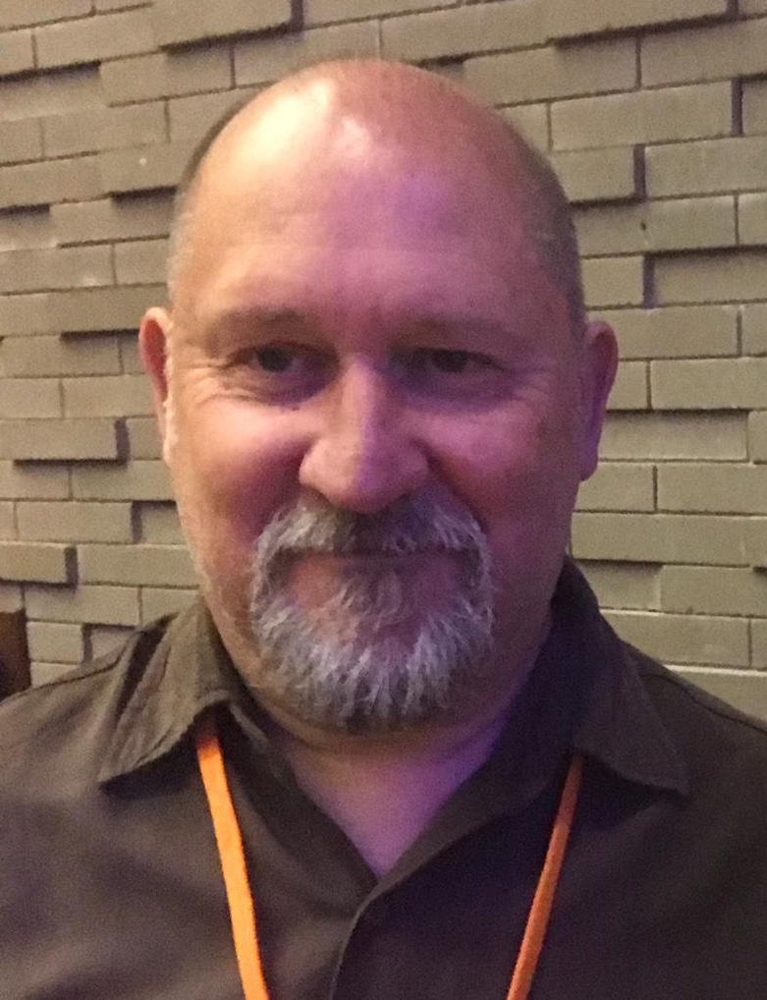
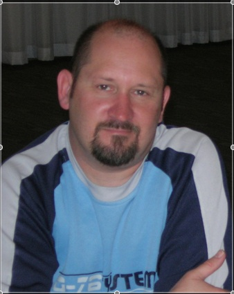
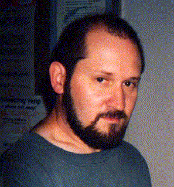
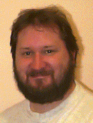

I have been working at CSIRO, Australia's Science Agency, since 2012 as a research software engineer (RSE), and for the last 4 years, managing a team of RSEs.
I previously worked for the Australian Semiconductor Technology Company developing hardware (SoC) simulations.
Before this I was an Analyst/Programmer with Internode from May 2006 to June 2007, working with various Java technologies such as Java 5, Spring, Hibernate, and JSP.
Until March 2006 I was employed as a Software Engineer at Freescale Semiconductor, a spin-off of Motorola. Motorola was located in Adelaide, South Australia and I worked there from April 7 1997. My transition to from Motorola to Freescale happened mid-2004. Unfortunately, Freescale decided to focus upon large centres of 500 staff or more, and we were only around 150.
Prior to working for Freescale and Motorola, I lived in Tasmania for 10 years where I spent 2 years as Vision Internet Service's Unix System Administrator and Programmer, 4 years prior to that as a junior academic with the Department of Applied Computing and Mathematics (now the Department of Computing) at the University of Tasmania in Launceston, and a year prior to that as a Computer Systems Officer at the same institution. Before that I was a nurse for 9 years working in a variety of places including Intensive Care and Recovery.
I graduated with a Master of Science (Computer and Information Science) degree in April 2001. I commenced this degree at the University of Tasmania and completed it at the University of South Australia.
Some of my computing interests are: programming language design & implementation, programming paradigms, Design Patterns and Pattern Languages, scripting languages, astronomical computing, social and psychological effects of computing, and the history of computing.
I'm a member of the Australian Computer Society and a contributor to the Adelaide branch of the Australian Java User Group.
I'm a regular attendee at SA PIC User Group meetings and enjoy fooling around with PIC microcontrollers. Why? Because they're cheap, have a nice simple RISC instruction set, and present resource challenges.
Apart from enjoying programming in general, I'm an amateur astronomer (member of the Astronomical Society of SA) and Sci-Fi buff. I live with my tolerant wife Karen (who also enjoys Sci-FI), various computers, telescopes, and books.
Most importantly, Karen and I are the proud parents of Nicholas Steele David and Heather Jean Elizabeth who came into the world on February 26th 2000 and October 25th 2003, respectively. They provide us with a great deal of joy while challenging us 24/7.



